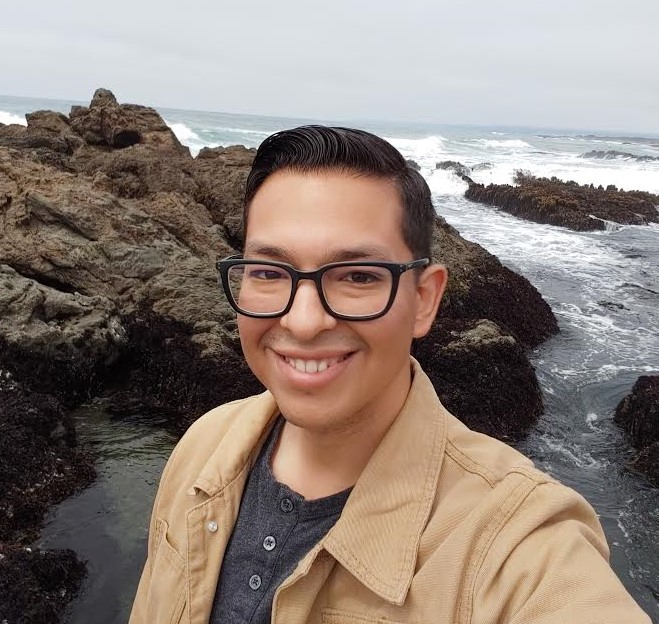

About Me

Welcome to my portfolio, I really appreciate you visiting! First a little bit about me. I am 29 years old, and grew up in the San Francisco Bay Area. I've been into everything technology ever since my dad brought home the most massive laptop ever before I could even remember how old I was. I used to spend hours online with dial up internet and literally ruin the phone forever for my family. I dabbled in various technologies and built my own computers since my early teen years
I've visited just four other states but I've lived down in San Luis Obispo for about five years. During that time my roommate was going to Cal Poly for Electrical Engineering and we did all kinds of fun things like building a home NAS and hosting our music and videos throughout the house. What really inspired me to finally pursue web development was in large part thanks to him! He's a backend developer specializing in C# now and that made it click, "if he went to school for Electrical Engineering then made his hobby of programming his job why can't I?" I've always dabbled in front end development due to my many and varied jobs over the years but decided that I need to dive full in (fullstack) after a conversation with my lovely Girlfriend when we were in Fort Bragg, CA. she helped me decide to really pursue my creative passion and take hold of my own future.
Until that conversation and decision to enroll in Bootcamp so I could have a more structured learning path I have been entirely self taught. I hope that this has given you a little insight into me, if you have any questions please contact me! I'd really love to hear from you. Check out my portfolio if you're interested in seeing what I can do, I'd love to recieve any criticism or pointers as well. We're only as good as we let ourselves be! Thanks again for taking the time to read through this I wish you a great day!
Keep it classy! ~ Christian